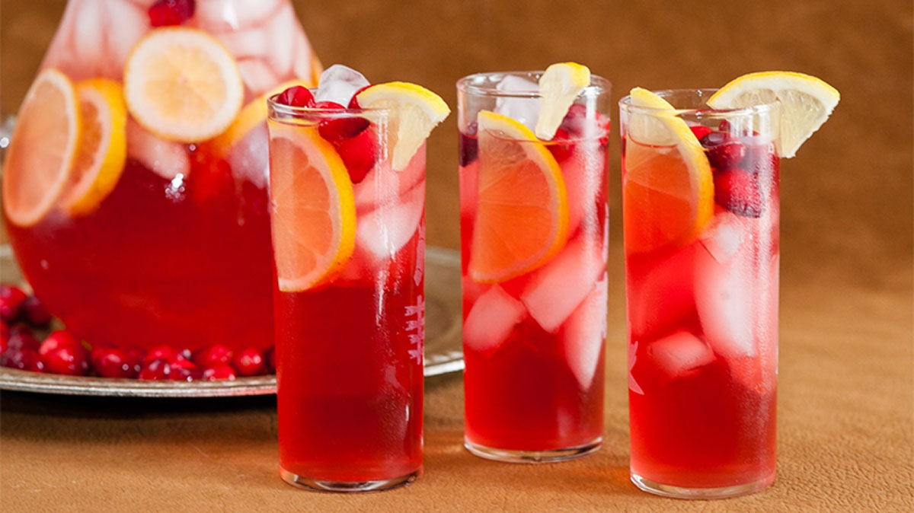

Red Bull Cranberry Mocktail

Description
I found this recipe on the Food Lion website, of all places. Well, more specifically, I found it on Google from searching "red bull mocktails," and then it took me to some discontinued/counterfeit/malicious version of the Food Lion website. I couldn't find it on their actual website, and when I first tried to access it from this weird facsimile website, it blocked me.
So, I'll refrain from linking it here, but I assure you this is a real, non-malicious recipe. (Based on my knowledge of the simple ingredients, at least.)
Ingredients
- 1 (12 fl oz) can Red Bull Energy Drink (I prefer Sugarfree)
- 2 cups cranberry juice
- 1 cup apple cider
- 2 cans ginger beer
- ½ cup fresh cranberries
- Lemons, thinly sliced
- Ice
- Cinnamon sticks (optional, but not optional for me!)
Steps
- In a large pitcher, place some ice, followed by Red Bull Energy Drink, cranberry juice, apple cider, and ginger beer. Stir together ingredients.
- Add some (but not all) sliced lemons and cranberries.
- In each serving glass, place some ice, a few cranberries, a slice of lemon, and the beverage.
- Serve with cinnamon sticks if desired (again, I desire them).